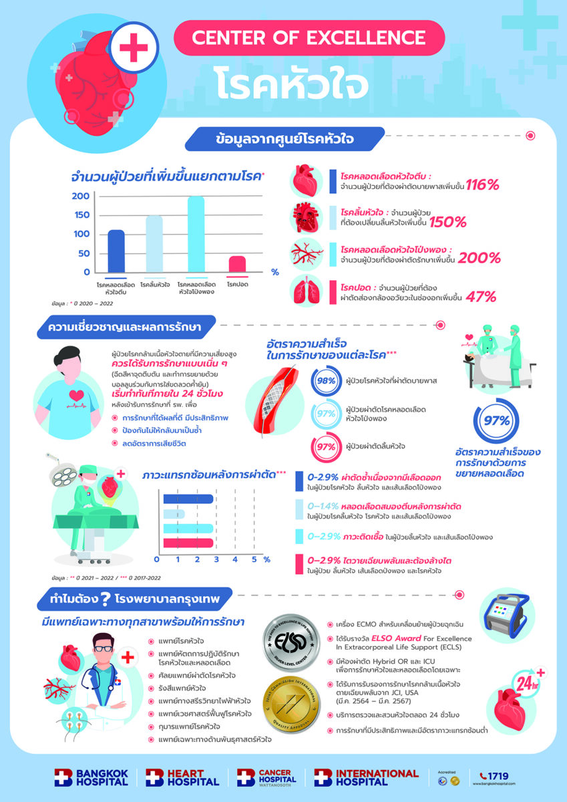

โรงพยาบาลหัวใจ กรุงเทพหัวใจกรุงเทพก่อตั้งขึ้นเพื่อบริการรักษาผู้ป่วยโรคหัวใจมาตรฐานทัดเทียมกับต่างประเทศ และเพื่อเผยแพร่ความรู้ให้คนไทยรู้จักการป้องกันและดูแลรักษาสุขภาพหัวใจให้แข็งแรง...
บริการตรวจวินิจฉัยโรคหัวใจ
- การตรวจด้วยอุปกรณ์พิเศษภายนอกร่างกาย เช่น การตรวจคลื่นไฟฟ้าหัวใจ
- การทำหัตถการแบบ Invasive เช่น การใส่สายสวนหัวใจ
- การตรวจรังสีวินิจฉัย
บริการด้านโรคหัวใจ
- การตรวจรักษาโรคของหลอดเลือดที่ไม่ใช่หลอดเลือดหัวใจ (Peripheral Vascular Disease)
- ภาวะหัวใจอ่อนกำลัง
- คลินิกป้องกันโรคหัวใจและลดไขมัน
- คลินิกฟื้นฟูและส่งเสริมสมรรถภาพหัวใจ
- ยาต้านการแข็งตัวของลิ่มเลือด
- การรักษาและผ่าตัดหัวใจเด็ก
คลินิกอายุรกรรมโรคหัวใจ ให้บริการตรวจประเมินความเสี่ยงของโรคหัวใจ และมีแพทย์เฉพาะทางพร้อมตรวจรักษาอาการต่าง ๆ เช่น โรคหลอดเลือดหัวใจตีบ ลิ้นหัวใจผิดปกติ กล้ามเนื้อหัวใจขาดเลือด ฯลฯ
